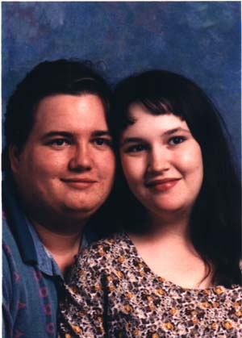

| Wes Neal |

Spawn is played by Wes Neal, a consulting engineer for Vanstar Corporation. Being cousin to Brutius,he has been around since the very beginning of SneezyMUD. His wife Susan plays Kyla on the mud, a retired goddess.Wes and Susan have two beautiful children Camryn (age 3) and Colin (age 2). In his spare time, Wes likes to playmultiplayer computer games like Myth, Red Alert, Warcraft, etc. He also enjoys stuff like Legends of the Five Ringscard game and Warhammer and Warhammer 40k. You can check out his homepage at: http://users.gmi.net/~janked.